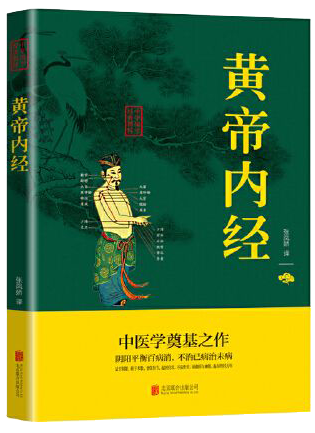

01
作者
多名作者
02
归属类别
中医学类书籍
03
别名
《内经》
04
影响评价
后世奉为“经典医籍”
| 书籍简介
《黄帝内经》分《灵枢》、《素问》两部分，是中国最早的医学典籍，传统医学四大经典著作之一（其余三者为《难经》、《伤寒杂病论》、《神农本草经》）。《黄帝内经》是一本综合性的医书，从整体观上来论述医学，呈现了自然、生物、心理、社会“整体医学模式”（另据现代学者考证，认为今本中的黄老道家痕迹是隋唐时期的道士王冰窜入。其基本素材来源于中国古人对生命现象的长期观察、大量的临床实践以及简单的解剖学知识。《黄帝内经》奠定了人体生理、病理、诊断以及治疗的认识基础，是中国影响极大的一部医学著作，被称为医之始祖。《黄帝内经》基本理论精神包括：整体观念、阴阳五行、藏象经络、病因病机、诊法治则、预防养生和运气学说等。《黄帝内经》接受了中国古代唯物的气一元论的哲学思想，将人看作整个物质世界的一部分，宇宙万物皆是由其原初物质“气”形成的。在“人与天地相参”、“与日月相应”的观念指导下，将人与自然紧密地联系在一起。